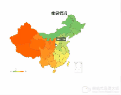

最近项目需求，需要一个对于全国各个省份的数据分析，图形最好是地图的样子，这样子更为直观。
最先想到的图表插件是Echarts,他的文档相对于阿里的G2,G6更加清晰一些。在Echarts 里找到的个
实例，效果如gif图，这里是实例的链接： https://gallery.echartsjs.com/editor.html?c=xa5_zRRpes，

看到上面的评论里，有挺多人评论说图形显示不了，因为实例上只有图表的属性Option,是无法显示
的。根据文档是需要创建一个 ECharts 实例，然后通过setOptions属性去设置图表实例的配置项以及
数据，实例化代码如下：
<div id="dom"></div>//实例容器，一般是一个具有高宽的
div元素。//注：如果
div是隐藏的，ECharts 可能会获取不到div的高宽导致初始化失败，这时候可以明确指定div的style.width和style.height，或者在div显示后手动调用 echartsInstance.resize 调整尺寸。let dom = echarts.init(document.querySelector('#dom')) //实例化domdom.setOption(option)//设置
重要的一点：我们需要自己引入地图数据，中国地图就需要引入china.js
ECharts 3 中因为地图精度的提高，不再内置地图数据增大代码体积，你可以在地图下载界面下载到需要的地图文件引入并注册到 ECharts 中。
ECharts 中提供了两种格式的地图数据，一种是可以直接 script 标签引入的 js 文件，引入后会自动注册地图名字和数据。还有一种是 JSON 文件，需要通过 AJAX 异步加载后手动注册。
下面是两种类型的使用示例：
JavaScript 引入示例
<script src="echarts.js"></script> <script src="map/js/china.js"></script> <script> var chart = echarts.init(document.getElementById('main')); chart.setOption({ series: [{ type: 'map', map: 'china' }] }); </script>
JSON 引入示例
$.get('map/json/china.json', function (chinaJson) { echarts.registerMap('china', chinaJson); var chart = echarts.init(document.getElementById('main')); chart.setOption({ series: [{ type: 'map', map: 'china' }] }); });
完整的代码
我是使用vue框架开发，需要install一下echarts，执行npm i -S echarts
map.vue(地图组件代码)
<template><div :style="styles" ref="dom"></div></template><script>import echarts from "echarts";import { on, off,getChartsMapData } from '@/libs/tools'import "../../../../node_modules/echarts/map/js/china.js"; // 引入中国地图数据export default {name: "ChartsMap",props: {/*** @description 图表宽*/width: {type: String,default: '50%'},/*** @description 图表高*/height: {type: String,default: '500px'},/*** @description 图表数据*/data: {type: Array,default: () => {/*** @description getChartsMapData() 获取地图的默认数据*/return getChartsMapData()}},/*** @description 设置图表的标题*/title: {type: Object,default: () => {return {show: true,text: "排名情况",textAlign: 'center',textStyle: {color: "#2D3E53",fontSize: 30},left: 'center',}}},/*** @description 指定 visualMapContinuous 组件的允许的最小值*/min: {type: [Number,String],default: 0},/*** @description 指定 visualMapContinuous 组件的允许的最大值*/max: {type: [Number,String],default: 34},/*** @description 指定 visualMapContinuous 组件的两端的文本 如['高','低']*/text: {type: Array,default: () => ['高','低']},/*** @description 定义 在选中范围中 的视觉元素*/inRange: {type: Object,default: () => {return {color: ["#6FCF6A", "#FFFD64", "#FF5000"]}}}},data () {return {dom: null}},computed: {styles() {return {width: this.width,height: this.height}}},methods: {resize () {this.dom.resize()}},mounted () {var option = {title: this.title,tooltip: {show: true,formatter: function(params) {return params.name + "：" + params.data["value"] + "%";}},visualMap: {type: "continuous",orient: "horizontal",itemWidth: 10,itemHeight: 80,text: this.text,showLabel: true,seriesIndex: [0],min: this.min,max: this.max,inRange: this.inRange,textStyle: {color: "#7B93A7"},bottom: 30,left: "left",},grid: {right: 10,top: 135,bottom: 100,width: "20%"},geo: {// roam: true,map: "china",left: "left",right: "300",// layoutSize: '80%',label: {emphasis: {show: false}},itemStyle: {emphasis: {areaColor: "#fff464"}}},series: [{name: "mapSer",type: "map",roam: false,geoIndex: 0,label: {show: false},data: this.data}]}this.$nextTick(() => {this.dom = echarts.init(this.$refs.dom)this.dom.setOption(option)on(window, 'resize', this.resize)})},beforeDestroy () {off(window, 'resize', this.resize)}};</script>
使用代码
<template><div id="app"><charts-map></charts-map></div></template>
<script>import ChartsMap from "_c/charts/map"import { getChartsMapData } from '@/libs/tools.js'export default {name: 'app',components: {ChartsMap},data () {return {width: '70%',height: '800px',data: getChartsMapData(),min: 10,max: 30,text: ['High', 'low'],inRange: {color: ['#f00', '#fff', '#00f']},title: {show: true,text: '全国数据',textAlign: 'center',textStyle: {color: '#2D3E53',fontSize: 30,lineHeight: 100},left: 'center',}}}}</script>
tools.js 这个工具函数，监听浏览器的resize事件和创造假数据
/*** @description 绑定事件 on(element, event, handler)*/export const on = (function () {if (document.addEventListener) {return function (element, event, handler) {if (element && event && handler) {element.addEventListener(event, handler, false)}}} else {return function (element, event, handler) {if (element && event && handler) {element.attachEvent('on' + event, handler)}}}})()
/*** @description 解绑事件 off(element, event, handler)*/export const off = (function () {if (document.removeEventListener) {return function (element, event, handler) {if (element && event) {element.removeEventListener(event, handler, false)}}} else {return function (element, event, handler) {if (element && event) {element.detachEvent('on' + event, handler)}}}})()
/*** @description 获取地图数据 getChartsMapData()*/
export const getChartsMapData = () => {const data = ["内蒙古","黑龙江","吉林","辽宁","北京","天津","河北","河南","山西","山东","江苏","安徽","上海","湖北","湖南","江西","浙江","福建","台湾","广东","香港","澳门","海南","广西","贵州","云南","重庆","四川","甘肃","陕西","宁夏","青海","西藏","新疆",]return data.map((item,index) => {return {name: item,value: index + 1}})}
我已经将他封装成一个vue组件，做成一个npm包了，直接npm install brock-charts -S 就可以使用，具体使用方法可以看这个地址：
https://www.npmjs.com/package/brock-charts